当我们在前面提及作用于电荷上的磁力与其速度成正比时，你也许会奇怪：“什么速度？相对于哪个参照系？”事实上，从本章开头所给出的有关B的定义就已经很清楚，这个矢量是什么取决于我们选取哪一个参照系来规定电荷的速度。但关于哪一个才是规定磁场的合适参照系，我们还未说过什么。
事实证明，任何 一个惯性系都可以。我们也将看到，磁和电并不是互相独立的东西，它们必须永远作为一个 完整的电磁场结合在一起。虽然在静止情况下，麦克斯韦方程组会分成性质不同的两对，其中一对是关于电方面，而另一对则关于磁方面，在这两种场之间并没有明显联系，然而，在自然界内部它们之间却有一个起因于相对性原理的十分密切的关系。从历史上看，相对性原理是在麦克斯韦方程组之后才发现的。事实上，正是对于电和磁的研究才最终导致爱因斯坦对相对性原理的发现。但是让我们且来看看，如果假定相对性原理可以——的确是可以——应用于电磁学方面的话，则关于磁力相对论知识会告诉我们些什么。
假定我们想一想，如图13-10所示，一个负电荷以速度v0 平行于一根载流导线而运动，将会发生的情况。我们试图理解在如下两种参照系中正在进行的事态：一个系统相对于导线固定，如图（a）所示；而另一个系统则相对于粒子固定，如图（b）所示。我们将第一个参照系叫作S，而第二个参照系叫作S′。
图13-10 从两个参照系上去看一根载流导线与一个电荷q的相互作用。（a）在S系上，导线是静止的；（b）在S′系上，电荷是静止的
在S系中，显然有一磁力作用于该粒子上。这力指向导线，所以若该电荷做自由运动，则应该看到它会向导线方面靠拢。但在S′系上，就不会有任何磁力作用于该粒子，因为它的速度为零。因此，它是否将停留在那里呢？在这两个参照系上，我们会看到不同的事态发生吗？相对性原理理应说明，在S′系我们也该看到粒子会向导线方面靠拢。必须尝试去理解，为什么会发生这样的事情。
现在我们回过头来对一载流导线中的原子进行描述。在诸如铜一类的通常导体中，电流来自某些负电子——称为传导电子——的运动，而正的核电荷以及其余电子则都在材料里保持不动。我们令传导电子的密度为ρ- ，在S系中它们的速度为v。在S系中，那些静止不动的电荷密度为ρ+ ，这必须等于ρ- 的负值，因为我们正在考虑的是一根不带电的导线。这样在导线之外便不会有电场，因而作用于该运动粒子上的力正好是
F=qv0 ×B.
利用式（13.18）中我们所求得的结果，即离导线轴心r处的磁场，我们可以断定，作用于该粒子上的力指向导线而具有量值：
利用式（13.3）和（13.5），电流I可以写成ρ- vA，其中A是导线的截面积。于是
我们可以继续处理任意速度v和v0 的普遍情况，但考察粒子速度v0 与传导电子速度v相等的那种特殊情况，只会更好。因此，我们就写成v0 =v，而式（13.20）则变成
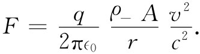 （13.21）
现在我们把注意力转移到在S′系中所发生的情况，那里粒子静止不动而导线则以速率v（朝向图的左方）从旁跑过。那些跟着导线跑的正电荷将在该粒子处造成某一磁场B′。但粒子现在是静止 的，因而就没有磁 力作用于其上了！如果有任何力作用于该粒子上，则它必然来自电场，必定是那根正在运动着的导线已产生了电场。但它所以能够这样只有它表现出带了电 ——一定是一根载流的中性导线运动时才会表现出带了电。
我们必须对此仔细检查。应当尝试从S系中所已知的导线里的电荷密度算出在S′系中导线内的电荷密度，人们起初也许认为它们相同。可是我们知道，长度在S与S′之间是改变的（见第1卷第15章），从而体积也将起变化。由于电荷密度 有赖于电荷所占的体积，因而密度也将发生变化。
在我们对S′系中的电荷密度 做出决定以前，必须知道一群电子正在运动时它们的电荷 会发生什么情况。我们知道，一个粒子的表观质量按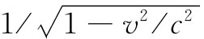 变化。是否它的电荷也要做某种相似变化？不！无论动还是不动，电荷 总是一样 的。否则我们便不会始终都观测到总电荷守恒了。
假设我们取一块材料，比方说一块导体，它原本是不带电的。现在我们把它加热。由于电子与质子的质量不同，所以它们速度改变的数量将会不同。假如粒子的电荷有赖于携带该电荷的粒子的速率，则在这么一块加了热的导体中，电子和质子的电荷便不再平衡了。一块材料当加了热之后就该变成带电的了。正如以前我们曾经见到的，在一块材料中所有电子的电荷若发生微小变化就会引起巨大的电场。这样的效应却从未观测到。
并且，我们还可以指出，在物质中电子的平均速率与其化学成分有关。假如电子的电荷会随速率变化，则在一块材料中的净电荷将在化学反应中有所变化。通过一种直接计算又能够证明：即使电荷对速率仅有一个十分微小的依存关系，也会从最简单的化学反应中产生出巨大的电场来。但从没有这种效应被观测到，因而我们得出结论：单个粒子的电荷与其运动状态无关。
因此，一个粒子所带的电荷q是一个不变标量，与参照系无关。这意味着，在任何参照系中，由电子分布的电荷密度恰好就正比于单位体积中的电子数目。我们只需关注这么一个事实：体积可以 由于距离的相对论性收缩而发生改变。
现在，我们把这些概念应用于正在运动的那根导线。如果取长度为L0 的一段导线，其中静止 电荷具有密度ρ0 ，则它将含有总电荷Q=ρ0 L0 A0 。如果同样这些电荷是在一个以速度v运动着的不同参照系中被观测的，则它们均会在一段较短 的长度
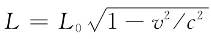 （13.22）
的材料内被找到。但面积A0 却依旧不变（因为垂直于运动的尺度不会改变），参见图13-11。
图13-11 如果处于静止的带电粒子的一个分布具有电荷密度ρ0 ，则从一个以相对速度v运动着的参照系来看，同样的电荷将具有密度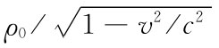
若把电荷在其中运动着的那个参照系中的电荷密度叫做ρ，则总电荷Q将是ρLA0 。这也必定等于ρ0 L0 A0 ，因为在任一参照系中电荷总是一样的，所以ρL=ρ0 L0 ，或根据式（13.22），
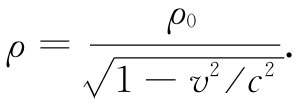 （13.23）
在一个运动着的电荷分布 中，其电荷密度 的变化情况，就像一个粒子的相对论性质量那样。
现在我们将这一普遍结果应用于导线中的正电荷，这些电荷在S参照系中是静止的。然而在S′系中，导线以速率v运动，因而正电荷密度就会变成：
负 电荷在S′系上是静止的，因而在这一参照系中它们具有“静密度”ρ0 ，即在式（13.23）中，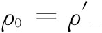 。由于当导线 静止时，即在S系中，负电荷的速率为v，因而它们具有密度ρ- 。于是对于传导电子来说，我们便有
现在我们就能够明白，为什么在S′系中会有电场——因为在这一个参照系上导线里拥有净电荷密度ρ′，其为
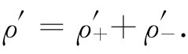
利用式（13.24）和（13.26），便得
由于静止导线是中性的，ρ- =-ρ+ ，因而我们就有
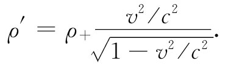 （13.27）
由此可见，运动导线会带正电，并将在导线外的一个静止电荷处产生电场E′。我们已经解决了一个均匀带电柱体的静电学问题。与该柱轴相距为r处的电场为
作用于带负电粒子上的力指向导线。从这两个观点来看，至少我们有一个相同方向的力，在S′系中的电力与在S系中的磁力方向相同。
在S′参照系中，力的大小为
拿这个结果F′与式（13.21）中的结果F比较，我们看到从这两个观点来说力的大小几乎完全相等。事实上，
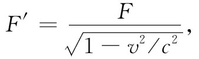 （13.30）
所以对于我们已经考虑过的低速情况，这两个力相等。至少，对于低速情况我们能够说，我们相信磁和电不过是“观察同一事物的两种方法”而已。
可是事情甚至比此还要好。若我们从一参照系过渡到另一参照系时把力 的变换这一事实也计算在内，则将发现这两种看待事情发生的方法对于任何速度来说都确实给出相同的物理 结果。
要弄清楚这一点的一种办法，是先提出这样一个问题：力作用了一会儿之后，该粒子会有什么样的横向动量？从第1卷第16章中我们知道，不论在S或S′参照系中，一个粒子的横向动量应该相同。若把这横向坐标叫作y，则我们要来比较Δpy 和Δp′y 。利用在相对论中正确的运动方程F=dp/dt，我们期待在Δt时间之后粒子将有一横向动量Δpy ，这在S参照系中即是
Δpy =FΔt. （13.31）
而在S′系，则这横向动量将为
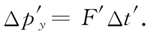 （13.32）
当然，我们必须在互相对应的时间间隔Δt与Δt′中来比较Δpy 和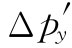 。在第1卷第15章中我们曾见到，相对于一个运动 粒子来说，时间间隔显得比在该粒子的静止系统中要长些 。由于粒子在S′系中最初是静止的，因而我们期望，对于小的Δt，应有
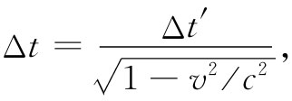 （13.33）
而所有这一切都表现正常。根据式（13.31）和（13.32），
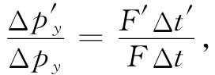
如果把式（13.30）和（13.33）两式结合起来，上式正好等于1。
我们已发现：对于沿一导线运动着的粒子，无论是从相对于导线静止的坐标系，还是从相对于粒子静止的坐标系来进行分析，都会得到同样的物理结果。在第一种情况下，该力纯系“磁”力；而在第二种情况下，则力纯系“电”力。这两种观点显示于图13-12中（尽管在第二个参照系中仍有一磁场B′，但它对于一静止粒子来说将不会产生任何力）。
图13-12 （a）在S参照系，电荷密度为零而电流密度为j。这里仅有一磁场。（b）在S′系，就有电荷密度ρ′和一不同的电流密度j′。磁场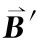 已经不同，且还有一电场E′
要是选取另一个坐标系，则会找到另一组不同的E和B场。电力和磁力都是同一 物理现象——粒子间的电磁相互作用——中的两个部分。把这一相互作用分成电的和磁的两部分，在很大程度上取决于被选用来描述它的参照系，但完整的电磁描述是不变的，因而电和磁合在一起就同爱因斯坦的相对论是一致的了。
由于我们改变坐标系时，电场和磁场会以不同的混合体显示出来，所以如何看待E场和B场就必须小心谨慎。例如，倘若我们把E和B想象成“线”，就决不可能赋予太多的真实性。若试图从一个不同的坐标系去进行观察，有些线可能会消失。比如，在S′系上有电场线，但我们却从未 发现过这些线“在S系上以速度v在我们旁边通过”。在这个S系中根本就没有电场线！因此，做这样的陈述是没有意义的：当我把一块磁铁移动时，它会带着它的磁场一起动，因而B线也就在移动。一般说来，从“场线的运动速率”这么一种概念出发，始终无法构成任何意义。场是我们用来描述在空间一点所发生的事情的办法。特别是，E和B告诉我们作用于一个运动粒子上的力。“由运动 磁场作用于一电荷上的力是什么”的问题根本不含有任何准确意义。力是由电荷处E和B的值给出的，而公式（13.1）不会由于E或B之源 正在运动而改变（E和B之值才会由于源的运动而发生改变）。我们的数学描述只是同相对于某一惯性参照系 的两种作为x，y，z和t的函数的场打交道。
以后将常提到“在空间传播的电场和磁场的波 ”，诸如光波。但这与谈论一根弦线上的行波 相似。此时，我们并非指弦线 的某部分将会在波的方向上运动，而是指弦线的位移 将首先出现在某处，继而又出现在另一处。同理，在一电磁波中，波 在传播，但是场的大小在变化 。所以今后当我们——或其他人——谈及一个“运动着”的场时，你就应该把它看作仅是一种描述在某些情况下变化着的场的既便利而又快捷的途径。